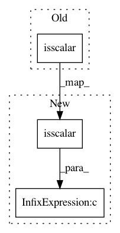

ad3312bb0b7ba299c96b6338eb98fc60cb5f7fab,scipy/sparse/sputils.py,,ismatrix,#Any#,141
Before Change
def ismatrix(t):
return ((issequence(t) and issequence(t[0]) and np.isscalar(t[0][0]))
or (isinstance(t, np.ndarray) and t.ndim == 2))
After Change
def ismatrix(t):
return ((issequence(t) and issequence(t[0]) and (len(t[0]) == 0 or np.isscalar(t[0][0])))
or (isinstance(t, np.ndarray) and t.ndim == 2))
In pattern: SUPERPATTERN
Frequency: 3
Non-data size: 3
Instances
Project Name: scipy/scipy
Commit Name: ad3312bb0b7ba299c96b6338eb98fc60cb5f7fab
Time: 2013-08-13
Author: pav@iki.fi
File Name: scipy/sparse/sputils.py
Class Name:
Method Name: ismatrix
Project Name: scipy/scipy
Commit Name: ad3312bb0b7ba299c96b6338eb98fc60cb5f7fab
Time: 2013-08-13
Author: pav@iki.fi
File Name: scipy/sparse/sputils.py
Class Name:
Method Name: issequence
Project Name: chainer/chainer
Commit Name: 164933c8d6c4bf6766410e37805a3154bfb9228a
Time: 2019-08-23
Author: ecastill@preferred.jp
File Name: chainer/initializers/__init__.py
Class Name:
Method Name: _get_initializer